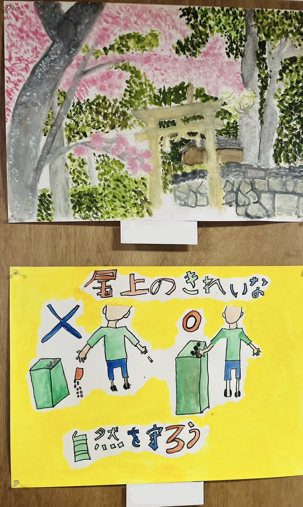
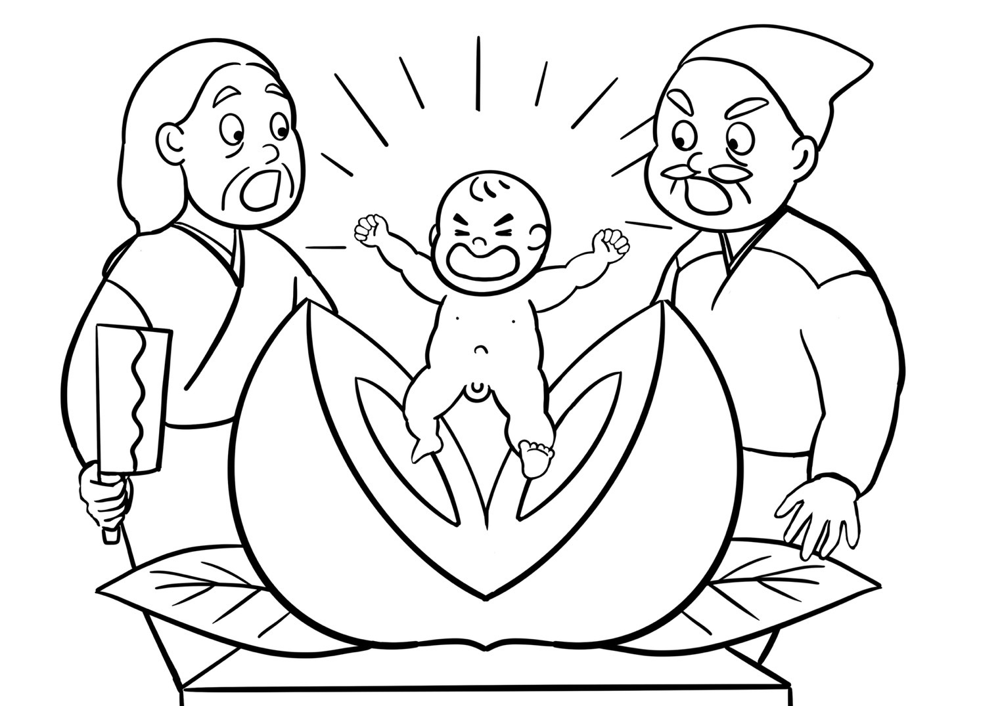
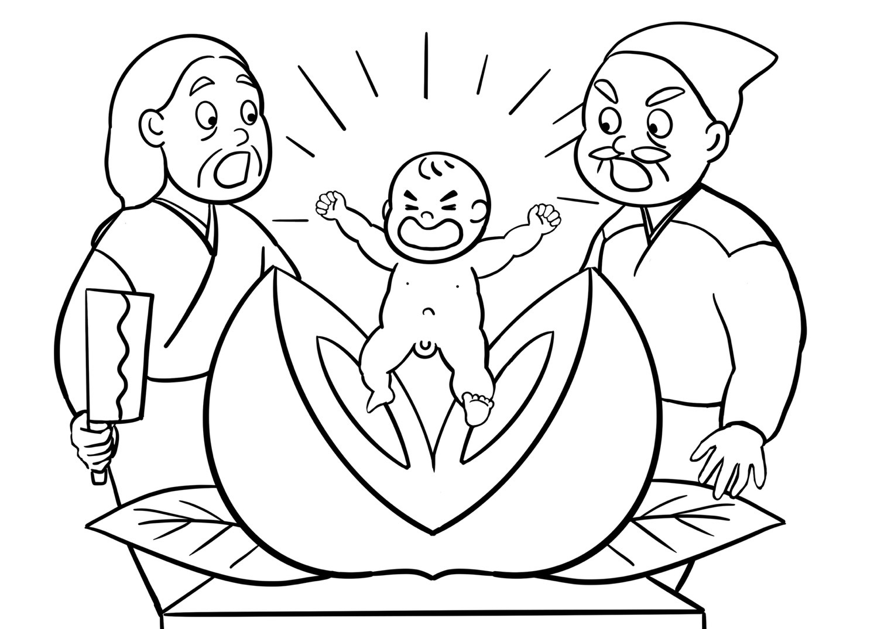

尾上町内会のみなさんの桃太郎作品
子どもたちの塗り絵作品、尾上の風景や桃太郎を描いた絵、環境美化ポスター、俳句を紹介します。尾上公会堂に展示され、選ばれた作品に尾上桃太郎賞が贈られました。
思い思いの色で桃太郎を塗っています。
桃太郎を題材にしたオリジナルの作品です。

尾上の風景や環境美化を呼びかけるポスター作品です。
桃太郎や尾上にちなんだ俳句作品です。
 

私はお願いごとを書く札と桃太郎の塗り絵を作成しました。
ふるさとである尾上町内会の桃太郎プロジェクトに微力ながら携わることができたことを嬉しく思います。
© DesignII R239026 Keiko Matsumoto All Rights Reserved.